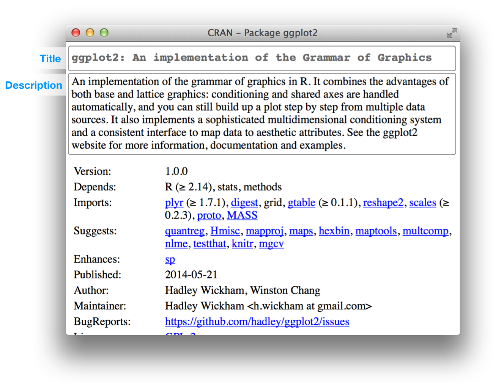

Chapter 4 Package metadata
The job of the DESCRIPTION file is to store important metadata about your package. When you first start writing packages, you’ll mostly use these metadata to record what packages are needed to run your package. However, as time goes by and you start sharing your package with others, the metadata file becomes increasingly important because it specifies who can use it (the license) and whom to contact (you!) if there are any problems.
Every package must have a DESCRIPTION. In fact, it’s the defining feature of a package (RStudio and devtools consider any directory containing DESCRIPTION to be a package). To get you started, devtools::create("mypackage") automatically adds a bare-bones description file. This will allow you to start writing the package without having to worry about the metadata until you need to. The minimal description will vary a bit depending on your settings, but should look something like this:
Package: mypackage
Title: What The Package Does (one line, title case required)
Version: 0.1
Authors@R: person("First", "Last", email = "first.last@example.com",
role = c("aut", "cre"))
Description: What the package does (one paragraph)
Depends: R (>= 3.1.0)
License: What license is it under?
LazyData: true(If you’re writing a lot of packages, you can set global options via devtools.desc.author, devtools.desc.license, devtools.desc.suggests, and devtools.desc. See package?devtools for more details.)
DESCRIPTION uses a simple file format called DCF, the Debian control format. You can see most of the structure in the simple example below. Each line consists of a field name and a value, separated by a colon. When values span multiple lines, they need to be indented:
Description: The description of a package is usually long,
spanning multiple lines. The second and subsequent lines
should be indented, usually with four spaces.This chapter will show you how to use the most important DESCRIPTION fields.
4.1 Dependencies: What does your package need?
It’s the job of the DESCRIPTION to list the packages that your package needs to work. R has a rich set of ways of describing potential dependencies. For example, the following lines indicate that your package needs both ggvis and dplyr to work:
Imports:
dplyr,
ggvisWhereas, the lines below indicate that while your package can take advantage of ggvis and dplyr, they’re not required to make it work:
Suggests:
dplyr,
ggvisBoth Imports and Suggests take a comma separated list of package names. I recommend putting one package on each line, and keeping them in alphabetical order. That makes it easy to skim.
Imports and Suggests differ in their strength of dependency:
Imports: packages listed here must be present for your package to work. In fact, any time your package is installed, those packages will, if not already present, be installed on your computer (devtools::load_all()also checks that the packages are installed).Adding a package dependency here ensures that it’ll be installed. However, it does not mean that it will be attached along with your package (i.e.,
library(x)). The best practice is to explicitly refer to external functions using the syntaxpackage::function(). This makes it very easy to identify which functions live outside of your package. This is especially useful when you read your code in the future.If you use a lot of functions from other packages this is rather verbose. There’s also a minor performance penalty associated with
::(on the order of 5µs, so it will only matter if you call the function millions of times). You’ll learn about alternative ways to call functions in other packages in namespace imports.Suggests: your package can use these packages, but doesn’t require them. You might use suggested packages for example datasets, to run tests, build vignettes, or maybe there’s only one function that needs the package.Packages listed in
Suggestsare not automatically installed along with your package. This means that you need to check if the package is available before using it (userequireNamespace(x, quietly = TRUE)). There are two basic scenarios:# You need the suggested package for this function my_fun <- function(a, b) { if (!requireNamespace("pkg", quietly = TRUE)) { stop("Package \"pkg\" needed for this function to work. Please install it.", call. = FALSE) } } # There's a fallback method if the package isn't available my_fun <- function(a, b) { if (requireNamespace("pkg", quietly = TRUE)) { pkg::f() } else { g() } }
When developing packages locally, you never need to use Suggests. When releasing your package, using Suggests is a courtesy to your users. It frees them from downloading rarely needed packages, and lets them get started with your package as quickly as possible.
The easiest way to add Imports and Suggests to your package is to use devtools::use_package(). This automatically puts them in the right place in your DESCRIPTION, and reminds you how to use them.
devtools::use_package("dplyr") # Defaults to imports
#> Adding dplyr to Imports
#> Refer to functions with dplyr::fun()
devtools::use_package("dplyr", "Suggests")
#> Adding dplyr to Suggests
#> Use requireNamespace("dplyr", quietly = TRUE) to test if package is
#> installed, then use dplyr::fun() to refer to functions.4.1.1 Versioning
If you need a specific version of a package, specify it in parentheses after the package name:
Imports:
ggvis (>= 0.2),
dplyr (>= 0.3.0.1)
Suggests:
MASS (>= 7.3.0)You almost always want to specify a minimum version rather than an exact version (MASS (== 7.3.0)). Since R can’t have multiple versions of the same package loaded at the same time, specifying an exact dependency dramatically increases the chance of conflicting versions.
Versioning is most important when you release your package. Usually people don’t have exactly the same versions of packages installed that you do. If someone has an older package that doesn’t have a function your package needs, they’ll get an unhelpful error message. However, if you supply the version number, they’ll get a error message that tells them exactly what the problem is: an out of date package.
Generally, it’s always better to specify the version and to be conservative about which version to require. Unless you know otherwise, always require a version greater than or equal to the version you’re currently using.
4.1.2 Other dependencies
There are three other fields that allow you to express more specialised dependencies:
Depends: Prior to the rollout of namespaces in R 2.14.0,Dependswas the only way to “depend” on another package. Now, despite the name, you should almost always useImports, notDepends. You’ll learn why, and when you should still useDepends, in namespaces.You can also use
Dependsto require a specific version of R, e.g.Depends: R (>= 3.0.1). As with packages, it’s a good idea to play it safe and require a version greater than or equal to the version you’re currently using.devtools::create()will do this for you.In R 3.1.1 and earlier you’ll also need to use
Depends: methodsif you use S4. This bug is fixed in R 3.2.0, so methods can go back toImportswhere they belong.LinkingTo: packages listed here rely on C or C++ code in another package. You’ll learn more aboutLinkingToin compiled code.Enhances: packages listed here are “enhanced” by your package. Typically, this means you provide methods for classes defined in another package (a sort of reverseSuggests). But it’s hard to define what that means, so I don’t recommend usingEnhances.
You can also list things that your package needs outside of R in the SystemRequirements field. But this is just a plain text field and is not automatically checked. Think of it as a quick reference; you’ll also need to include detailed system requirements (and how to install them) in your README.
4.2 Title and description: What does your package do?
The title and description fields describe what the package does. They differ only in length:
Titleis a one line description of the package, and is often shown in package listing. It should be plain text (no markup), capitalised like a title, and NOT end in a period. Keep it short: listings will often truncate the title to 65 characters.Descriptionis more detailed than the title. You can use multiple sentences but you are limited to one paragraph. If your description spans multiple lines (and it should!), each line must be no more than 80 characters wide. Indent subsequent lines with 4 spaces.
The Title and Description for ggplot2 are:
Title: An implementation of the Grammar of Graphics
Description: An implementation of the grammar of graphics in R. It combines
the advantages of both base and lattice graphics: conditioning and shared
axes are handled automatically, and you can still build up a plot step
by step from multiple data sources. It also implements a sophisticated
multidimensional conditioning system and a consistent interface to map
data to aesthetic attributes. See the ggplot2 website for more information,
documentation and examples.A good title and description are important, especially if you plan to release your package to CRAN because they appear on the CRAN download page as follows:
knitr::include_graphics("diagrams/cran-package.png")
Because Description only gives you a small amount of space to describe what your package does, I also recommend including a README.md file that goes into much more depth and shows a few examples. You’ll learn about that in README.md.
4.4 License: Who can use your package?
The License field can be either a standard abbreviation for an open source license, like GPL-2 or BSD, or a pointer to a file containing more information, file LICENSE. The license is really only important if you’re planning on releasing your package. If you don’t, you can ignore this section. If you want to make it clear that your package is not open source, use License: file LICENSE and then create a file called LICENSE, containing for example:
Proprietary
Do not distribute outside of Widgets Incorporated.Open source software licensing is a rich and complex field. Fortunately, in my opinion, there are only three licenses that you should consider for your R package:
MIT (v. similar: to BSD 2 and 3 clause licenses). This is a simple and permissive license. It lets people use and freely distribute your code subject to only one restriction: the license must always be distributed with the code.
The MIT license is a “template”, so if you use it, you need
License: MIT + file LICENSE, and aLICENSEfile that looks like this:YEAR: <Year or years when changes have been made> COPYRIGHT HOLDER: <Name of the copyright holder>GPL-2 or GPL-3. These are “copy-left” licenses. This means that anyone who distributes your code in a bundle must license the whole bundle in a GPL-compatible way. Additionally, anyone who distributes modified versions of your code (derivative works) must also make the source code available. GPL-3 is a little stricter than GPL-2, closing some older loopholes.
CC0. It relinquishes all your rights on the code and data so that it can be freely used by anyone for any purpose. This is sometimes called putting it in the public domain, a term which is neither well-defined nor meaningful in all countries.
This license is most appropriate for data packages. Data, at least in the US, is not copyrightable, so you’re not really giving up much. This license just makes this point clear.
If you’d like to learn more about other common licenses, Github’s choosealicense.com is a good place to start. Another good resource is https://tldrlegal.com/, which explains the most important parts of each license. If you use a license other than the three I suggest, make sure you consult the “Writing R Extensions” section on licensing.
If your package includes code that you didn’t write, you need to make sure you’re in compliance with its license. Since this occurs most commonly when you’re including C source code, it’s discussed in more detail in compiled code.
4.4.1 On CRAN
If you want to release your package to CRAN, you must pick a standard license. Otherwise it’s difficult for CRAN to determine whether or not it’s legal to distribute your package! You can find a complete list of licenses that CRAN considers valid at https://svn.r-project.org/R/trunk/share/licenses/license.db.
4.5 Version
Formally, an R package version is a sequence of at least two integers separated by either . or -. For example, 1.0 and 0.9.1-10 are valid versions, but 1 or 1.0-devel are not. You can parse a version number with numeric_version.
numeric_version("1.9") == numeric_version("1.9.0")## [1] TRUEnumeric_version("1.9.0") < numeric_version("1.10.0")## [1] TRUEFor example, a package might have a version 1.9. This version number is considered by R to be the same as 1.9.0, less than version 1.9.2, and all of these are less than version 1.10 (which is version “one point ten”, not "one point one zero). R uses version numbers to determine whether package dependencies are satisfied. A package might, for example, import package devtools (>= 1.9.2), in which case version 1.9 or 1.9.0 wouldn’t work.
The version number of your package increases with subsequent releases of a package, but it’s more than just an incrementing counter – the way the number changes with each release can convey information about what kind of changes are in the package.
I don’t recommend taking full advantage of R’s flexibility. Instead always use . to separate version numbers.
A released version number consists of three numbers,
<major>.<minor>.<patch>. For version number 1.9.2, 1 is the major number, 9 is the minor number, and 2 is the patch number. Never use versions like1.0, instead always spell out the three components,1.0.0.An in-development package has a fourth component: the development version. This should start at 9000. For example, the first version of the package should be
0.0.0.9000. There are two reasons for this recommendation: first, it makes it easy to see if a package is released or in-development, and the use of the fourth place means that you’re not limited to what the next version will be.0.0.1,0.1.0and1.0.0are all greater than0.0.0.9000.Increment the development version, e.g. from
9000to9001if you’ve added an important feature that another development package needs to depend on.If you’re using svn, instead of using the arbitrary
9000, you can embed the sequential revision identifier.
This advice here is inspired in part by Semantic Versioning and by the X.Org versioning schemes. Read them if you’d like to understand more about the standards of versioning used by many open source projects.
We’ll come back to version numbers in the context of releasing your package, picking a version number. For now, just remember that the first version of your package should be 0.0.0.9000.
4.6 Other components
A number of other fields are described elsewhere in the book:
Collatecontrols the order in which R files are sourced. This only matters if your code has side-effects; most commonly because you’re using S4. This is described in more depth in documenting S4.LazyDatamakes it easier to access data in your package. Because it’s so important, it’s included in the minimal description created by devtools. It’s described in more detail in external data.
There are actually many other rarely, if ever, used fields. A complete list can be found in the “The DESCRIPTION file” section of the R extensions manual. You can also create your own fields to add additional metadata. The only restrictions are that you shouldn’t use existing names and that, if you plan to submit to CRAN, the names you use should be valid English words (so a spell-checking NOTE won’t be generated).